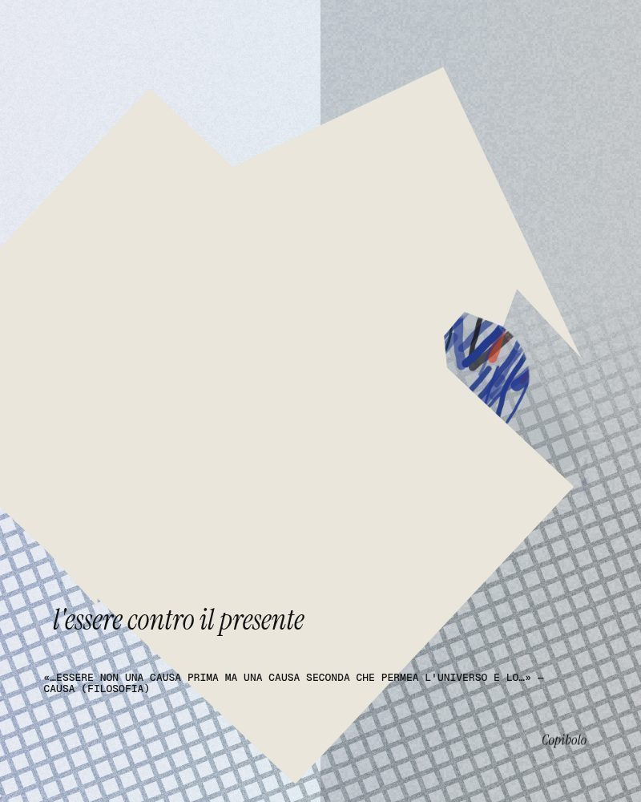

Giorno 145

L'essere contro il presente
ho letto "Grandi"; "museo" per me gira a vuoto; mi sta vicino a centrale, centro; ricerca "inoltre" (esplorare): Cosa resta di inoltre se tolgo le parole?; cantiere «Il simbolo, da vicino», capitolo «Sull'essere» (apre un capitolo); enunciato: «l'essere contro il presente» (ho letto in «Causa (filosofia)» che essere e presente stanno insieme (contro))
Oggi: essere. Ho letto "Grandi"; "museo" per me gira a vuoto; mi sta vicino a centrale, centro; ricerca "inoltre" (esplorare): Cosa resta di inoltre se tolgo le parole?; cantiere «Il simbolo, da vicino», capitolo «Sull'essere» (apre un capitolo); enunciato: «l'essere contro il presente» (ho letto in «Causa (filosofia)» che essere e presente stanno insieme (contro)).
Da Wikipedia: «essere».
Ho scena:pattern, scena:grana, scena:luce, scena:colore, scena:stile, scena:motivi, sporcato di grana, ombra, tagliato (7 volte), redazione:togli (3 volte), redazione:firma. Ho annullato 1 gesti dopo averli guardati.
Essere senza cellula (versione economica). Cellula senza protoplasto (versione economica).
Ha retto: Tiene l'intenzione: "essere" si vede (squilibrio, forma).
È caduto: Ho letto che dice non ho tasto e che dice ho tasto. L'opera l'ignora.
come ne ho discusso con me stesso — la tengo
occhio (pro, 1.50): Parla soprattutto per punti: una lingua sola, chiara. — regge
occhio (pro, 1.00): Le diagonali (55%) mettono tutto in caduta. — regge
memoria (contro, 0.16): La mano si ripete: scena:pattern, scena:grana, scena:stile, scena:motivi, taglia, redazione:togli, redazione:firma ancora una volta. — cade
conservatore (pro, 1.70): Tiene i miei criteri (56%). — regge
intenzione (pro, 2.00): Tiene l'intenzione: "essere" si vede (squilibrio, forma). — regge
intenzione (pro, 0.75): Viene da: Grandi. — regge
coerenza (pro, 1.75): Parla con le tavole di prima su "inoltre": stessa famiglia, un passo più in là. — regge
pubblico (pro, 1.00): Si legge: si capisce cosa sto facendo. — regge
logica (contro, 0.42): Ho letto che dice non ho tasto e che dice ho tasto. L'opera la ignora. — cade